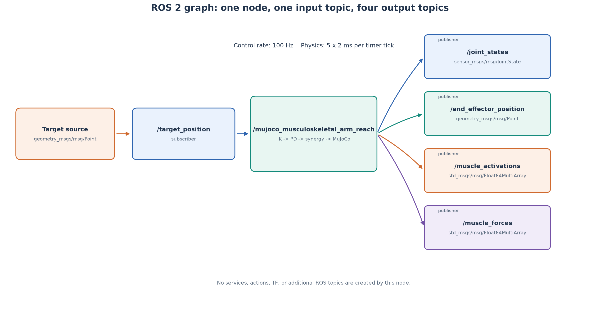
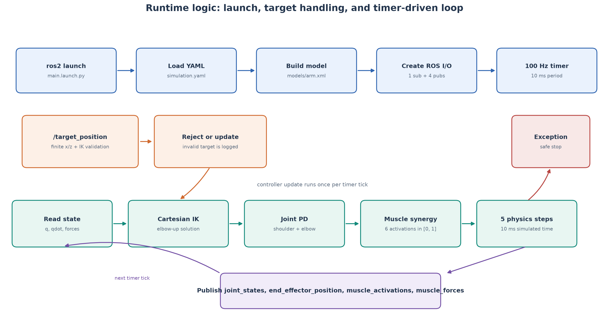
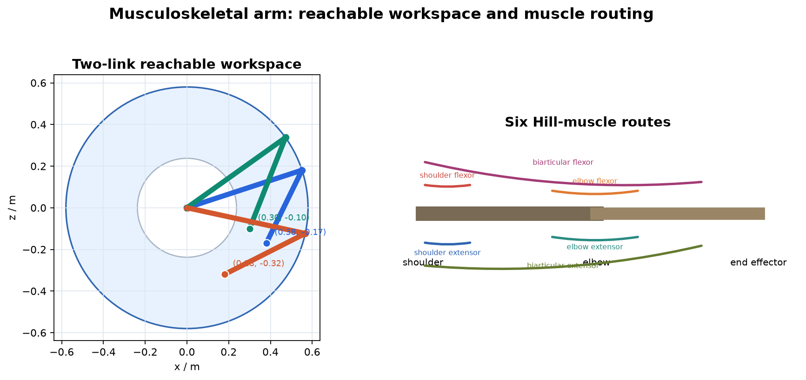
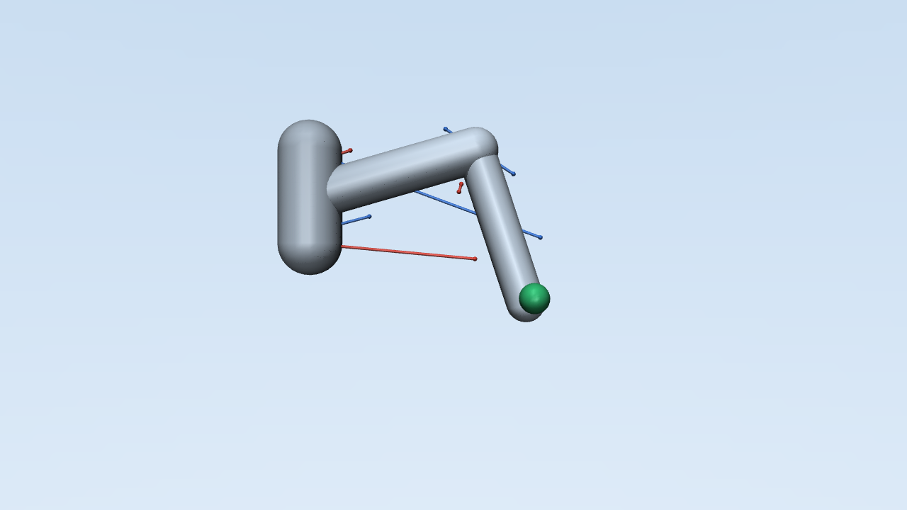
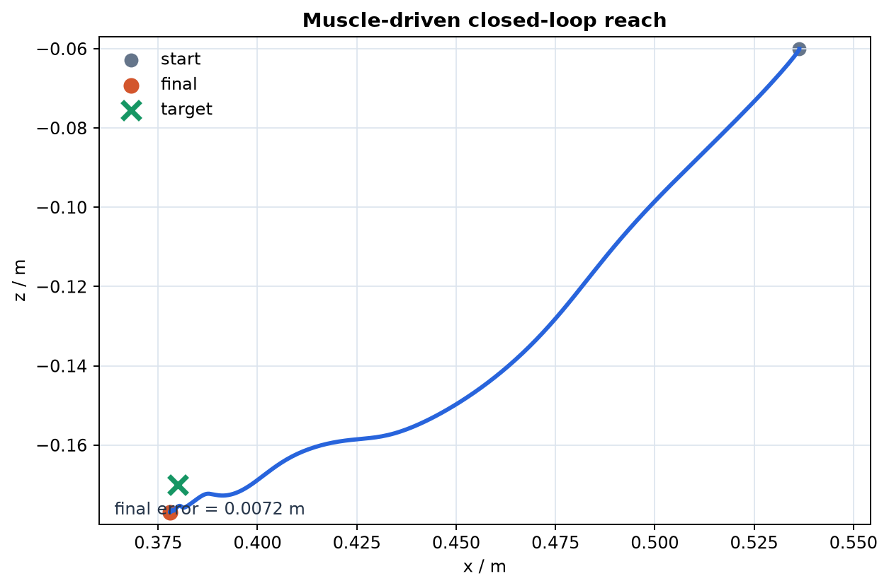
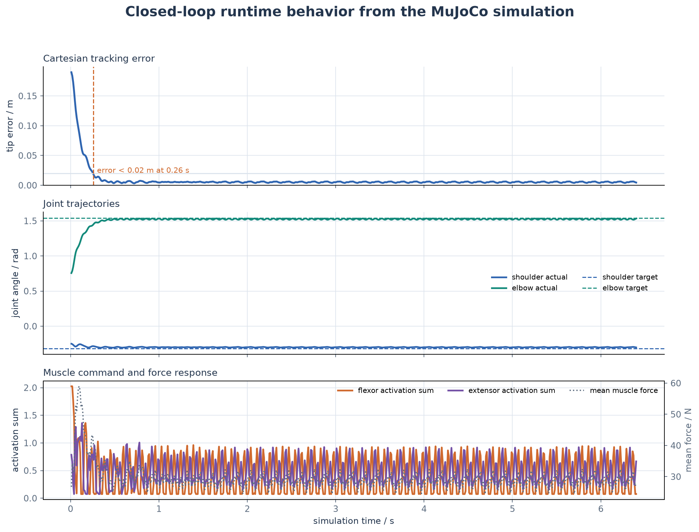

MuJoCo 双关节肌肉骨骼手臂到达控制
本模块把肌肉骨骼控制从单关节扩展到肩、肘两个关节。上臂和前臂由 6 条 Hill 型肌肉驱动，其中两条肌肉跨越双关节，因此同一个肌肉激活会同时影响 肩关节和肘关节。
1. 与现有模块的区别
| 模块 | 自由度 | 肌肉 | 重点 |
|---|---|---|---|
muscle_joint_control |
1 | 2 | Hill 模型与单关节刚度 |
| 灵巧手模块 | 8 | 11 | 手部遥操作和逆模型 |
| 本模块 | 2 | 6 | 双关节肌与笛卡尔到达 |
本模块没有重复实现单关节拮抗肌实验，而是重点处理运动冗余和肌肉跨关节 耦合力臂。
2. ROS 2 计算图与接口
geometry_msgs/Point"] --> B[平面两连杆逆运动学] B --> C[肩、肘 PD 力矩] C --> D[六肌肉协同分配] D --> E["/muscle_activations"] E --> F[MuJoCo Hill 肌肉与固定腱] F --> G["/joint_states"] F --> H["/end_effector_position"] F --> I["/muscle_forces"]
本模块只创建一个 ROS 2 节点
/mujoco_musculoskeletal_arm_reach，包含 1 个订阅话题和 4 个发布话题，
不创建 service、action 或 TF。

| 话题 | 类型 | 方向 | 内容与发布时机 |
|---|---|---|---|
/target_position |
geometry_msgs/msg/Point |
订阅 | 使用 x、z，y 忽略；收到消息后先做可达性检查 |
/joint_states |
sensor_msgs/msg/JointState |
发布 | 肩、肘位置与速度，每个 100 Hz 控制周期发布 |
/end_effector_position |
geometry_msgs/msg/Point |
发布 | 末端在手臂平面的 x-z 坐标 |
/muscle_activations |
std_msgs/msg/Float64MultiArray |
发布 | 6 条肌肉的归一化激活，顺序与模型一致 |
/muscle_forces |
std_msgs/msg/Float64MultiArray |
发布 | MuJoCo 计算出的 6 条肌肉力，单位 N |
启动后检查实时 ROS 计算图：
ros2 node list
ros2 node info /mujoco_musculoskeletal_arm_reach
ros2 topic list -t
ros2 topic hz /joint_states
rqt_graph
预期 ros2 node info 中的接口与上图及表格一致；rqt_graph 中应只出现上述
节点与五个话题。
3. 运行逻辑

启动阶段按以下顺序执行：
main.launch.py启动arm_sim_node；- 从
config/simulation.yaml加载参数； - 读取
models/arm.xml，创建 MuJoCo 状态； - 创建 1 个目标订阅和 4 个状态发布者；
- 注册 100 Hz 定时器，每 10 ms 执行一次控制回调。
每个控制周期读取肩、肘状态，执行逆运动学、PD 控制和六肌肉协同分配， 然后推进 5 个 2 ms MuJoCo 物理步，并发布最新状态。目标不可达时保留上一 有效目标；非有限坐标或不可达目标会被拒绝；仿真计算出现异常时清零全部 肌肉激活并停止定时器。
控制器不直接向关节施加理想力矩。它只输出 6 条肌肉的激活度，实际关节力矩 由 MuJoCo 根据肌腱长度、速度、力臂和肌肉执行器参数计算。
4. 双关节模型
模型位于 models/arm.xml。
| 项目 | 数值 |
|---|---|
| 上臂长度 | 0.30 m |
| 前臂长度 | 0.28 m |
| 肩关节范围 | -1.25 ～ 1.45 rad |
| 肘关节范围 | -0.10 ～ 2.30 rad |
| 控制周期 | 10 ms（5 个 2 ms 物理步） |


工作空间内半径不是两连杆差值 0.02 m。肘关节最大角为 2.30 rad，
因此允许的内半径约为 0.238 m；肩关节限位又会进一步裁掉部分扇区。
六条肌肉为：
| 肌肉 | 作用 |
|---|---|
shoulder_flexor |
肩屈 |
shoulder_extensor |
肩伸 |
elbow_flexor |
肘屈 |
elbow_extensor |
肘伸 |
biarticular_flexor |
同时参与肩、肘屈曲 |
biarticular_extensor |
同时参与肩、肘伸展 |
固定腱用关节系数定义每条肌肉的力臂。双关节肌同时包含肩系数和肘系数， 因此一条肌肉的激活会同时改变两个关节的力矩。
MuJoCo 的 fixed tendon 长度定义为关节坐标的线性组合，在 q=0 时为 0，
缩短时会出现负值。它是相对腱行程，不是绝对肌纤维长度。因此肩肌、肘肌和
双关节肌的 lengthrange 分别使用 ±0.09 m、±0.12 m、±0.14 m，
覆盖全部关节行程，并让零位对应归一化长度的中值。
5. 逆运动学与力矩分配
末端位置由两连杆正运动学给出：
x = L1 cos(q1) + L2 cos(q1 + q2)
z = -L1 sin(q1) - L2 sin(q1 + q2)
目标点先通过肘上构型的逆运动学转换为目标关节角，再由肩、肘 PD 控制器 计算期望关节力矩。关节力矩按下面的协同关系分配：
肩正力矩 -> shoulder_flexor
肩负力矩 -> shoulder_extensor
肘正力矩 -> elbow_flexor
肘负力矩 -> elbow_extensor
肩肘共同力矩 -> biarticular_flexor / biarticular_extensor
所有激活最终被限制在 [0, 1]。如果目标超出最大臂展或肘关节范围，
节点会拒绝该目标。
目标坐标均相对于肩关节，使用手臂平面的 x-z 坐标；100 Hz 控制回调每次
推进 5 个 2 ms MuJoCo 物理步。
6. 构建与运行
source /opt/ros/humble/setup.bash
python3 -m pip install --user \
-r src/musculoskeletal/mujoco_musculoskeletal_arm_reach/requirements.txt
colcon build \
--packages-select mujoco_musculoskeletal_arm_reach \
--symlink-install
source install/setup.bash
ros2 launch mujoco_musculoskeletal_arm_reach main.launch.py
向目标点发送指令：
ros2 topic pub --once /target_position geometry_msgs/msg/Point \
"{x: 0.30, y: 0.0, z: -0.10}"
观察状态：
ros2 node info /mujoco_musculoskeletal_arm_reach
ros2 topic list -t
ros2 topic hz /joint_states
ros2 topic echo /end_effector_position
ros2 topic echo /joint_states
ros2 topic echo /muscle_activations
ros2 topic echo /muscle_forces
7. 测试
python3 -m pytest \
src/musculoskeletal/mujoco_musculoskeletal_arm_reach/test -q
colcon test --packages-select mujoco_musculoskeletal_arm_reach
colcon test-result --verbose
覆盖内容：
- 正运动学和逆运动学闭环；
- 非有限目标和肩、肘限位拒绝；
- 不可达目标拒绝；
- 六维肌肉激活范围；
- 肩、肘主动肌选择；
- ROS 节点订阅和发布话题名称；
- 回合目标回调拒绝与仿真异常安全停机；
- 100 Hz 控制下的收敛时间和最终误差；
- 模型关节、固定腱和肌肉数量；
- 固定腱长度范围覆盖全部关节行程；
- MuJoCo 模型加载与安全步进。
闭环到达结果：

默认目标 (0.38, -0.17) m 在 3.2 s 内到达，最终误差约
0.005 ～ 0.007 m。
真实 MuJoCo 闭环运行记录：

默认目标下，末端误差约 0.26 s 进入 0.02 m 范围，随后保持在
0.005 m 左右。关节角逐渐跟踪逆运动学目标；屈肌与伸肌保持共同激活，
以提供关节稳定性和双向力矩控制能力。
重新生成三张 ROS 与运行图：
python3 \
src/musculoskeletal/mujoco_musculoskeletal_arm_reach/scripts/generate_ros_diagrams.py
8. 当前边界
本模块是三步扩展中的 Commit 1：
- 目前只有刚性 Hill 肌肉参数；
- 尚未加入串联弹性肌腱；
- 尚未加入肌梭、高尔基腱器官、噪声和传输延迟；
- 尚未加入疲劳和学习控制。
这些内容分别进入后续肌腱/本体感觉与疲劳/学习控制提交，避免一个提交同时 修改模型、传感和控制造成难以验收。